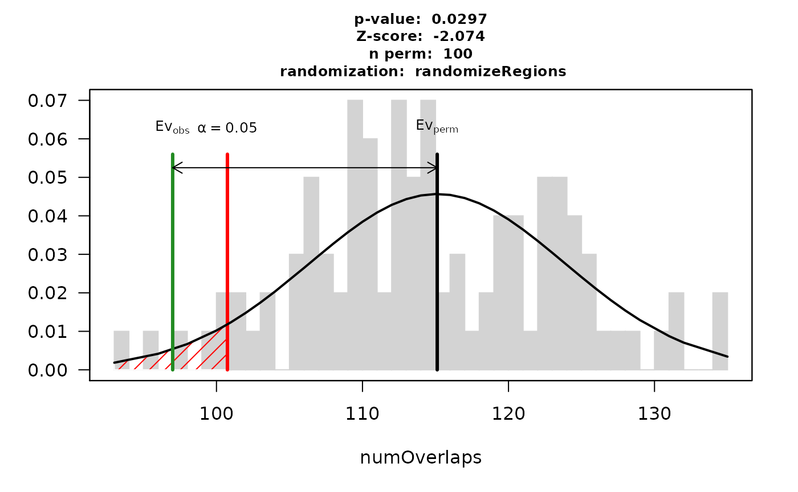
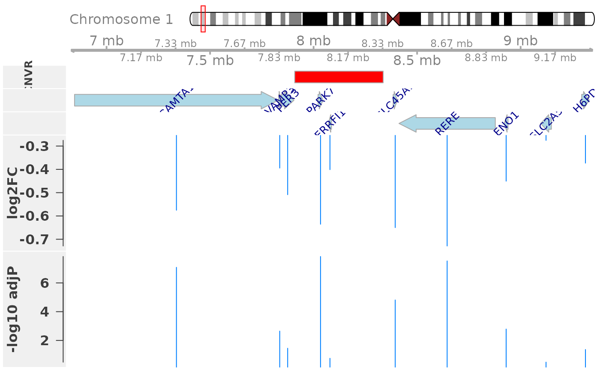
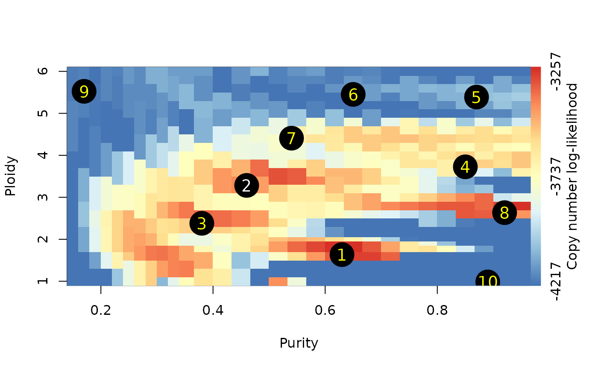

Geistlinger_CNVWorkshop.RmdCopy number variation analysis with Bioconductor
Workshop information
Instructor(s) name(s) and contact information
Ludwig Geistlinger, Marcel Ramos, Sehyun Oh, and Levi Waldron
CUNY School of Public Health 55 W 125th St, New York, NY 10027
Ludwig.Geistlinger@sph.cuny.edu<> Marcel.Ramos@sph.cuny.edu<> Sehyun.Oh@sph.cuny.edu<> Levi.Waldron@sph.cuny.edu
Workshop Description
This workshop gives an overview of Bioconductor solutions for the analysis of copy number variation (CNV) data. The workshop introduces Bioconductor core data structures for efficient representation, access, and manipulation of CNV data, and how to use these containers for structured downstream analysis of CNVs and integration with gene expression and quantitative phenotypes. Participants will be provided with code and hands-on practice for a comprehensive set of typical analysis steps including exploratory analysis, summarizing individual CNV calls across a population, overlap analysis with functional genomic regions and regulatory elements, expression quantitative trait loci (eQTL) analysis, and genome-wide association analysis (GWAS) with quantitative phenotypes. As an advanced application example, the workshop also introduces allele-specific absolute copy number analysis and how it is incorporated in genomic cancer analysis for the estimation of tumor characteristics such as tumor purity and ploidy.
Pre-requisites
Basic knowledge of R syntax
Familiarity with the SummarizedExperiment class
Familiarity with the GenomicRanges class
Familiarity with high-throughput genomic assays such as microarrays and next-generation sequencing
Familiarity with the biological definition of single nucleotide polymorphism (SNP) and copy number variation (CNV)
Time outline
| Activity | Time |
|---|---|
| Overview | 5m |
| Data representation and manipulation | 20m |
| Integrative downstream analysis (eQTL, GWAS, …) | 20m |
| Allele-specific CN analysis in cancer | 15m |
Learning Goals
- get familiar with elementary concepts of CNV analysis
- learn how to efficiently represent, access, and manipulate CNV data in Bioconductor data structures
- get familiar with different strategies for summarizing individual CNV calls across a population
- learn how to assess the significance of overlaps between CNVs and functional genomic regions
- learn how carry out association analysis with gene expression and quantitative phenotypes
- get familiar with allele-specific absolute CN analysis of genomic cancer data
Specific objectives
- understand how CNVs can be experimentally detected and computationally inferred from SNP arrays and next-generation sequencing data
- learn how to use
GRangesListandRaggedExperimentto represent, access, and manipulate CNV data - understand different strategies for finding recurrent CNV regions in a population, including density trimming, reciprocal overlap, and recurrence significance estimation
- learn how to use the regioneR package to assess the significance of overlaps between CNVs and functional genomic regions such as genes, promoters, and enhancers.
- learn how to carry out eQTL analysis for CNV and RNA-seq data
- learn how to carry out a GWAS analysis for CNV and quantitative phenotype data
- learn how to estimate tumor purity and ploidy from absolute CN analysis with PureCN
Overview
Copy number variation (CNV) is a frequently observed deviation from the diploid state due to duplication or deletion of genomic regions. CNVs can be experimentally detected based on comparative genomic hybridization, and computationally inferred from SNP-arrays or next-generation sequencing data. These technologies for CNV detection have in common that they report, for each sample under study, genomic regions that are duplicated or deleted with respect to a reference. Such regions are denoted as CNV calls in the following and will be considered the starting point for analysis.
Relevant literature:
da Silva V, Ramos M, Groenen M, Crooijmans R, Johansson A, Regitano L, Coutinho L, Zimmer R, Waldron L, Geistlinger L. CNVRanger: association analysis of CNVs with gene expression and quantitative phenotypes. Bioinformatics, 36(3):972-3, 2020.
Oh S, Geistlinger L, Ramos M, Morgan M, Waldron L, Riester M. Reliable analysis of clinical tumor-only whole-exome sequencing data. JCO Clin Cancer Inform, 4:321-35, 2020.
Geistlinger L, Oh S, Ramos M, Schiffer L, LaRue R, Henzler C, Munro S, Daughters C, Nelson A, Winterhoff B, Chang Z, Talukdar S, Shetty M, Mullaney S, Morgan M, Parmigiani G, Birrer M, Qin LX, Riester M, Starr T, Waldron L. Multi-omic analysis of subtype evolution and heterogeneity in high-grade serous ovarian carcinoma. bioRxiv, 2020.
Representation and manipulation of CNV data with RaggedExperiment
RaggedExperiment is a flexible data representation for segmented copy number, somatic mutations such as represented in .vcf files, and other ragged array schema for genomic location data. Like the GRangesList class from GenomicRanges, RaggedExperiment can be used to represent differing genomic ranges on each of a set of samples. In fact, RaggedExperiment contains a GRangesList:
showClass("RaggedExperiment")
## Class "RaggedExperiment" [package "RaggedExperiment"]
##
## Slots:
##
## Name: assays rowidx colidx metadata
## Class: GRangesList integer integer list
##
## Extends: "Annotated"
Constructing a RaggedExperiment object
We start with a toy example of two GRanges objects, providing ranges on two chromosomes in two samples:
sample1 <- GRanges( c(A = "chr1:1-10:-", B = "chr1:8-14:+", C = "chr1:15-18:+"), score = 3:5, type=c("germline", "somatic", "germline")) sample2 <- GRanges( c(D = "chr1:1-10:-", E = "chr1:11-18:+"), score = 11:12, type=c("germline", "somatic"))
Include column data colData to describe the samples:
The RaggedExperiment can be constructed from individual Granges:
(ragexp <- RaggedExperiment( sample1 = sample1, sample2 = sample2, colData = colDat))
## class: RaggedExperiment
## dim: 5 2
## assays(2): score type
## rownames(5): A B C D E
## colnames(2): sample1 sample2
## colData names(2): id statusOr from a GRangesList:
grl <- GRangesList(sample1=sample1, sample2=sample2) ragexp2 <- RaggedExperiment(grl, colData = colDat) identical(ragexp, ragexp2)
## [1] TRUENote that the original ranges are is represented as the rowRanges of the RaggedExperiment:
rowRanges(ragexp)
## GRanges object with 5 ranges and 0 metadata columns:
## seqnames ranges strand
## <Rle> <IRanges> <Rle>
## A chr1 1-10 -
## B chr1 8-14 +
## C chr1 15-18 +
## D chr1 1-10 -
## E chr1 11-18 +
## -------
## seqinfo: 1 sequence from an unspecified genome; no seqlengths
*Assay functions
RaggedExperiment provides a flexible set of _*Assay_ methods to support transformation of data to matrix format with varying row dimensions.

RaggedExperiment object schematic. Rows and columns represent genomic ranges and samples, respectively. Assay operations can be performed with (from left to right) compactAssay, qreduceAssay, and sparseAssay.
The four main Assay functions for converting to matrix are:
- sparseAssay: leave ranges exactly as-is
- compactAssay: combine identical ranges
- disjoinAssay: disjoin ranges that overlap across samples
- qreduceAssay: find overlaps with provided “query” ranges
These each have a corresponding function for conversion to RangedSummarizedExperiment.
sparseAssay
The most straightforward matrix representation of a RaggedExperiment will return a matrix with the number of rows equal to the total number of ranges defined across all samples. i.e. the 5 rows of the sparseAssay result:
sparseAssay(ragexp)
## sample1 sample2
## A 3 NA
## B 4 NA
## C 5 NA
## D NA 11
## E NA 12correspond to the ranges of the unlisted GRangesList:
unlist(grl)
## GRanges object with 5 ranges and 2 metadata columns:
## seqnames ranges strand | score type
## <Rle> <IRanges> <Rle> | <integer> <character>
## sample1.A chr1 1-10 - | 3 germline
## sample1.B chr1 8-14 + | 4 somatic
## sample1.C chr1 15-18 + | 5 germline
## sample2.D chr1 1-10 - | 11 germline
## sample2.E chr1 11-18 + | 12 somatic
## -------
## seqinfo: 1 sequence from an unspecified genome; no seqlengthsThe rownames of the sparseAssay result are equal to the names of the GRanges elements. The values in the matrix returned by sparseAssay correspond to the first columns of the mcols of each GRangesList element, in this case the “score” column.
Note, this is the default assay() method of RaggedExperiment:
assay(ragexp, "score")
## sample1 sample2
## A 3 NA
## B 4 NA
## C 5 NA
## D NA 11
## E NA 12assay(ragexp, "type")
## sample1 sample2
## A "germline" NA
## B "somatic" NA
## C "germline" NA
## D NA "germline"
## E NA "somatic"compactAssay
The dimensions of the compactAssay result differ from that of the sparseAssay result only if there are identical ranges in different samples. Identical ranges are placed in the same row in the output. Ranges with any difference in start, end, or strand, will be kept on different rows. Non-disjoint ranges are not collapsed.
compactAssay(ragexp)
## sample1 sample2
## chr1:8-14:+ 4 NA
## chr1:11-18:+ NA 12
## chr1:15-18:+ 5 NA
## chr1:1-10:- 3 11compactAssay(ragexp, "type")
## sample1 sample2
## chr1:8-14:+ "somatic" NA
## chr1:11-18:+ NA "somatic"
## chr1:15-18:+ "germline" NA
## chr1:1-10:- "germline" "germline"Note that row names are constructed from the ranges, and the names of the GRanges vectors are lost, unlike in the sparseAssay result.
disjoinAssay
This function is similar to compactAssay except the rows are disjoint1 ranges. Elements of the matrix are summarized by applying the simplifyDisjoin functional argument to assay values of overlapping ranges.
disjoinAssay(ragexp, simplifyDisjoin = mean)
## sample1 sample2
## chr1:8-10:+ 4 NA
## chr1:11-14:+ 4 12
## chr1:15-18:+ 5 12
## chr1:1-10:- 3 11qreduceAssay
The qreduceAssay function is the most complicated but likely the most useful of the RaggedExperiment Assay functions. It requires you to provide a query argument that is a GRanges vector, and the rows of the resulting matrix correspond to the elements of this GRanges. The returned matrix will have dimensions length(query) by ncol(x). Elements of the resulting matrix correspond to the overlap of the i th query range in the j th sample, summarized according to the simplifyReduce functional argument. This can be useful, for example, to calculate per-gene copy number or mutation status by providing the genomic ranges of every gene as the query.
The simplifyReduce argument in qreduceAssay allows the user to summarize overlapping regions with a custom method for the given “query” region of interest. We provide one for calculating a weighted average score per query range, where the weight is proportional to the overlap widths between overlapping ranges and a query range.
Note that there are three arguments to this function. See the documentation for additional details.
weightedmean <- function(scores, ranges, qranges) { isects <- pintersect(ranges, qranges) sum(scores * width(isects)) / sum(width(isects)) }
The call to qreduceAssay calculates the overlaps between the ranges of each sample:
grl## GRangesList object of length 2:
## $sample1
## GRanges object with 3 ranges and 2 metadata columns:
## seqnames ranges strand | score type
## <Rle> <IRanges> <Rle> | <integer> <character>
## A chr1 1-10 - | 3 germline
## B chr1 8-14 + | 4 somatic
## C chr1 15-18 + | 5 germline
## -------
## seqinfo: 1 sequence from an unspecified genome; no seqlengths
##
## $sample2
## GRanges object with 2 ranges and 2 metadata columns:
## seqnames ranges strand | score type
## <Rle> <IRanges> <Rle> | <integer> <character>
## D chr1 1-10 - | 11 germline
## E chr1 11-18 + | 12 somatic
## -------
## seqinfo: 1 sequence from an unspecified genome; no seqlengthswith the query ranges (an arbitrary set is defined here for demonstration): First create a demonstration “query” region of interest:
(query <- GRanges(c("chr1:1-14:-", "chr1:15-18:+")))
## GRanges object with 2 ranges and 0 metadata columns:
## seqnames ranges strand
## <Rle> <IRanges> <Rle>
## [1] chr1 1-14 -
## [2] chr1 15-18 +
## -------
## seqinfo: 1 sequence from an unspecified genome; no seqlengthsusing the simplifyReduce function to resolve overlapping ranges and return a matrix with rows corresponding to the query:
qreduceAssay(ragexp, query, simplifyReduce = weightedmean)
## sample1 sample2
## chr1:1-14:- 3 11
## chr1:15-18:+ 5 12Conversion to RangedSummarizedExperiment
These methods all have corresponding methods to return a RangedSummarizedExperiment and preserve the colData:
sparseSummarizedExperiment(ragexp) compactSummarizedExperiment(ragexp) disjoinSummarizedExperiment(ragexp, simplify = mean) qreduceSummarizedExperiment(ragexp, query = query, simplify = weightedmean)
Please see the RaggedExperiment vignette for more details.
Integrative downstream analysis of CNVs with CNVRanger

(A) The CNVRanger package imports CNV calls from a simple file format into R, and stores them in dedicated Bioconductor data structures, and (B) implements three frequently used approaches for summarizing CNV calls across a population: (i) the CNVRuler that trims region margins based on regional density Kim et al., 2012, (ii) the reciprocal overlap procedure that requires sufficient mutual overlap between calls Conrad et al., 2010, and (iii) the GISTIC procedure that identifies recurrent CNV regions Beroukhim et al., 2007. (C) CNVRanger builds on regioneR for overlap analysis of CNVs with functional genomic regions, (D) implements RNA-seq expression Quantitative Trait Loci (eQTL) analysis for CNVs by interfacing with edgeR, and (E) interfaces with PLINK for traditional genome-wide association studies (GWAS) between CNVs and quantitative phenotypes.
The key parts of the functionality implemented in CNVRanger were developed, described, and applied in several previous studies:
Genome-wide detection of CNVs and their association with meat tenderness in Nelore cattle da Silva et al., 2016
Widespread modulation of gene expression by copy number variation in skeletal muscle Geistlinger et al., 2018
CNVs are associated with genomic architecture in a songbird da Silva et al., 2018
Reading and accessing CNV data

CNVRanger uses Bioconductor core data structures implemented in the GenomicRanges and RaggedExperiment packages to represent, access, and manipulate CNV data.
We start by loading the package.
library(CNVRanger)
Input data format
CNVRanger reads CNV calls from a simple file format, providing at least chromosome, start position, end position, sample ID, and integer copy number for each call.
For demonstration, we consider CNV calls as obtained with PennCNV from SNP-chip data in a Brazilian cattle breed (da Silva et al., 2016).
Here, we use a data subset and only consider CNV calls on chromosome 1 and 2, for which there are roughly 3000 CNV calls as obtained for 711 samples. We use read.csv to read comma-separated values, but we could use a different function if the data were provided with a different delimiter (for example, read.delim for tab-separated values).
data.dir <- system.file("extdata", package="CNVRanger") call.file <- file.path(data.dir, "Silva16_PONE_CNV_calls.csv") calls <- read.csv(call.file, as.is=TRUE) nrow(calls)
## [1] 3000head(calls)
## chr start end NE_id state
## 1 chr1 16947 45013 NE001423 3
## 2 chr1 36337 67130 NE001426 3
## 3 chr1 16947 36337 NE001428 3
## 4 chr1 36337 105963 NE001519 3
## 5 chr1 36337 83412 NE001534 3
## 6 chr1 36337 83412 NE001648 3## [1] 711We observe that this example dataset satisfies the basic five-column input format required by CNVRanger.
The last column contains the integer copy number state for each call, encoded as
-
0: homozygous deletion (2-copy loss) -
1: heterozygous deletion (1-copy loss) -
2: normal diploid state -
3: 1-copy gain -
4: amplification (>= 2-copy gain)
Representation as a GRangesList
Once read into an R data.frame, we group the calls by sample ID and convert them to a GRangesList. Each element of the list corresponds to a sample, and contains the genomic coordinates of the CNV calls for this sample (along with the copy number state in the state metadata column).
grl <- makeGRangesListFromDataFrame(calls, split.field = "NE_id", keep.extra.columns = TRUE) grl
## GRangesList object of length 711:
## $NE001357
## GRanges object with 5 ranges and 1 metadata column:
## seqnames ranges strand | state
## <Rle> <IRanges> <Rle> | <integer>
## [1] chr1 4569526-4577608 * | 3
## [2] chr1 15984544-15996851 * | 1
## [3] chr1 38306432-38330161 * | 3
## [4] chr1 93730576-93819471 * | 0
## [5] chr2 40529044-40540747 * | 3
## -------
## seqinfo: 2 sequences from an unspecified genome; no seqlengths
##
## $NE001358
## GRanges object with 1 range and 1 metadata column:
## seqnames ranges strand | state
## <Rle> <IRanges> <Rle> | <integer>
## [1] chr1 105042452-105233446 * | 1
## -------
## seqinfo: 2 sequences from an unspecified genome; no seqlengths
##
## $NE001359
## GRanges object with 4 ranges and 1 metadata column:
## seqnames ranges strand | state
## <Rle> <IRanges> <Rle> | <integer>
## [1] chr1 4569526-4577608 * | 3
## [2] chr1 31686841-31695808 * | 0
## [3] chr1 93730576-93819471 * | 0
## [4] chr2 2527718-2535261 * | 0
## -------
## seqinfo: 2 sequences from an unspecified genome; no seqlengths
##
## ...
## <708 more elements>The advantage of representing the CNV calls as a GRangesList is that it allows to leverage the comprehensive set of operations on genomic regions implemented in the GenomicRanges package - for instance, sorting of the calls according to their genomic coordinates.
grl <- sort(grl) grl
## GRangesList object of length 711:
## $NE001357
## GRanges object with 5 ranges and 1 metadata column:
## seqnames ranges strand | state
## <Rle> <IRanges> <Rle> | <integer>
## [1] chr1 4569526-4577608 * | 3
## [2] chr1 15984544-15996851 * | 1
## [3] chr1 38306432-38330161 * | 3
## [4] chr1 93730576-93819471 * | 0
## [5] chr2 40529044-40540747 * | 3
## -------
## seqinfo: 2 sequences from an unspecified genome; no seqlengths
##
## $NE001358
## GRanges object with 1 range and 1 metadata column:
## seqnames ranges strand | state
## <Rle> <IRanges> <Rle> | <integer>
## [1] chr1 105042452-105233446 * | 1
## -------
## seqinfo: 2 sequences from an unspecified genome; no seqlengths
##
## $NE001359
## GRanges object with 4 ranges and 1 metadata column:
## seqnames ranges strand | state
## <Rle> <IRanges> <Rle> | <integer>
## [1] chr1 4569526-4577608 * | 3
## [2] chr1 31686841-31695808 * | 0
## [3] chr1 93730576-93819471 * | 0
## [4] chr2 2527718-2535261 * | 0
## -------
## seqinfo: 2 sequences from an unspecified genome; no seqlengths
##
## ...
## <708 more elements>
Representation as a RaggedExperiment
An alternative matrix-like representation of the CNV calls can be obtained with the RaggedExperiment data class. It resembles in many aspects the SummarizedExperiment data class for storing gene expression data as e.g. obtained with RNA-seq.
ra <- RaggedExperiment(grl) ra
## class: RaggedExperiment
## dim: 3000 711
## assays(1): state
## rownames: NULL
## colnames(711): NE001357 NE001358 ... NE003967 NE003968
## colData names(0):As apparent from the dim slot of the object, it stores the CNV calls in the rows and the samples in the columns. Note that the CN state is now represented as an assay matrix which can be easily accessed and subsetted.
assay(ra[1:5,1:5])
## NE001357 NE001358 NE001359 NE001360 NE001361
## chr1:4569526-4577608 3 NA NA NA NA
## chr1:15984544-15996851 1 NA NA NA NA
## chr1:38306432-38330161 3 NA NA NA NA
## chr1:93730576-93819471 0 NA NA NA NA
## chr2:40529044-40540747 3 NA NA NA NAAs with SummarizedExperiment objects, additional information for the samples are annotated in the colData slot. For example, we annotate the steer weight and its feed conversion ratio (FCR) using simulated data. Feed conversion ratio is the ratio of dry matter intake to live-weight gain. A typical range of feed conversion ratios is 4.5-7.5 with a lower number being more desirable as it would indicate that a steer required less feed per pound of gain.
weight <- rnorm(ncol(ra), mean=1100, sd=100) fcr <- rnorm(ncol(ra), mean=6, sd=1.5) colData(ra)$weight <- round(weight, digits=2) colData(ra)$fcr <- round(fcr, digits=2) colData(ra)
## DataFrame with 711 rows and 2 columns
## weight fcr
## <numeric> <numeric>
## NE001357 1010.73 4.91
## NE001358 1085.78 4.69
## NE001359 1175.89 7.04
## NE001360 1105.79 3.87
## NE001361 1063.63 7.59
## ... ... ...
## NE003962 1181.32 3.93
## NE003963 1171.99 5.62
## NE003966 1261.44 7.62
## NE003967 1078.17 5.44
## NE003968 1151.47 7.75Summarizing individual CNV calls across a population

In CNV analysis, it is often of interest to summarize individual calls across the population, (i.e. to define CNV regions), for subsequent association analysis with expression and phenotype data. In the simplest case, this just merges overlapping individual calls into summarized regions. However, this typically inflates CNV region size, and more appropriate approaches have been developed for this purpose.
Trimming low-density areas
Here, we use the approach from CNVRuler to summarize CNV calls to CNV regions (see Figure 1 in Kim et al., 2012 for an illustration of the approach). This trims low-density areas as defined by the density argument, which is set here to <10% of the number of calls within a summarized region.
cnvrs <- populationRanges(grl, density = 0.1) cnvrs
## GRanges object with 303 ranges and 2 metadata columns:
## seqnames ranges strand | freq type
## <Rle> <IRanges> <Rle> | <numeric> <character>
## [1] chr1 16947-111645 * | 103 gain
## [2] chr1 1419261-1630187 * | 18 gain
## [3] chr1 1896112-2004603 * | 218 gain
## [4] chr1 4139727-4203274 * | 1 gain
## [5] chr1 4554832-4577608 * | 23 gain
## ... ... ... ... . ... ...
## [299] chr2 136310067-136322489 * | 2 loss
## [300] chr2 136375337-136386940 * | 1 loss
## [301] chr2 136455546-136466040 * | 1 loss
## [302] chr2 136749793-136802493 * | 39 both
## [303] chr2 139194749-139665914 * | 58 both
## -------
## seqinfo: 2 sequences from an unspecified genome; no seqlengthsNote that CNV frequency (number of samples overlapping each region) and CNV type (gain, loss, or both) have also been annotated in the columns freq and type, respectively.
Identifying recurrent regions
In particular in cancer, it is important to distinguish driver from passenger mutations, i.e. to distinguish meaningful events from random background aberrations. The GISTIC method identifies those regions of the genome that are aberrant more often than would be expected by chance, with greater weight given to high amplitude events (high-level copy-number gains or homozygous deletions) that are less likely to represent random aberrations (Beroukhim et al., 2007).
By setting est.recur=TRUE, we deploy a GISTIC-like significance estimation
cnvrs <- populationRanges(grl, density = 0.1, est.recur = TRUE) cnvrs
## GRanges object with 303 ranges and 3 metadata columns:
## seqnames ranges strand | freq type pvalue
## <Rle> <IRanges> <Rle> | <numeric> <character> <numeric>
## [1] chr1 16947-111645 * | 103 gain 0.00980392
## [2] chr1 1419261-1630187 * | 18 gain 0.10784314
## [3] chr1 1896112-2004603 * | 218 gain 0.00000000
## [4] chr1 4139727-4203274 * | 1 gain 0.55882353
## [5] chr1 4554832-4577608 * | 23 gain 0.08823529
## ... ... ... ... . ... ... ...
## [299] chr2 136310067-136322489 * | 2 loss 0.2361111
## [300] chr2 136375337-136386940 * | 1 loss 0.4212963
## [301] chr2 136455546-136466040 * | 1 loss 0.4212963
## [302] chr2 136749793-136802493 * | 39 both 0.0588235
## [303] chr2 139194749-139665914 * | 58 both 0.0392157
## -------
## seqinfo: 2 sequences from an unspecified genome; no seqlengthsand filter for recurrent CNVs that exceed a significance threshold of 0.05.
subset(cnvrs, pvalue < 0.05)
## GRanges object with 17 ranges and 3 metadata columns:
## seqnames ranges strand | freq type pvalue
## <Rle> <IRanges> <Rle> | <numeric> <character> <numeric>
## [1] chr1 16947-111645 * | 103 gain 0.00980392
## [2] chr1 1896112-2004603 * | 218 gain 0.00000000
## [3] chr1 15984544-15996851 * | 116 loss 0.01851852
## [4] chr1 31686841-31695808 * | 274 loss 0.00462963
## [5] chr1 69205418-69219486 * | 46 loss 0.04166667
## ... ... ... ... . ... ... ...
## [13] chr2 97882695-97896935 * | 80 loss 0.0231481
## [14] chr2 124330343-124398570 * | 39 loss 0.0462963
## [15] chr2 135096060-135271140 * | 84 gain 0.0196078
## [16] chr2 135290754-135553033 * | 83 gain 0.0294118
## [17] chr2 139194749-139665914 * | 58 both 0.0392157
## -------
## seqinfo: 2 sequences from an unspecified genome; no seqlengthsWe can illustrate the landscape of recurrent CNV regions using the function plotRecurrentRegions. We therefore provide the summarized CNV regions, a valid UCSC genome assembly, and a chromosome of interest.
plotRecurrentRegions(cnvrs, genome = "bosTau6", chr = "chr1")
The function plots (from top to bottom): (i) an ideogram of the chromosome (note that staining bands are not available for bosTau6), (ii) a genome axis indicating the chromosomal position, (iii) a bar plot showing for each CNV region the number of samples with a CNV call in that region, and (iv) an annotation track that indicates whether this is a recurrent region according to a significance threshold (an argument to the function, default: 0.05).
Overlap analysis of CNVs with functional genomic regions

Once individual CNV calls have been summarized across the population, it is typically of interest whether the resulting CNV regions overlap with functional genomic regions such as genes, promoters, or enhancers.
To obtain the location of protein-coding genes, we query available Bos taurus annotation from Ensembl
library(AnnotationHub) ah <- AnnotationHub::AnnotationHub()
## using temporary cache /tmp/RtmpUW0TrD/BiocFileCache## snapshotDate(): 2020-06-18## AnnotationHub with 14 records
## # snapshotDate(): 2020-06-18
## # $dataprovider: Ensembl
## # $species: Bos taurus
## # $rdataclass: EnsDb
## # additional mcols(): taxonomyid, genome, description,
## # coordinate_1_based, maintainer, rdatadateadded, preparerclass, tags,
## # rdatapath, sourceurl, sourcetype
## # retrieve records with, e.g., 'object[["AH53189"]]'
##
## title
## AH53189 | Ensembl 87 EnsDb for Bos Taurus
## AH53693 | Ensembl 88 EnsDb for Bos Taurus
## AH56658 | Ensembl 89 EnsDb for Bos Taurus
## AH57731 | Ensembl 90 EnsDb for Bos Taurus
## AH60745 | Ensembl 91 EnsDb for Bos Taurus
## ... ...
## AH69141 | Ensembl 96 EnsDb for Bos taurus
## AH73832 | Ensembl 97 EnsDb for Bos taurus
## AH74957 | Ensembl 98 EnsDb for Bos taurus
## AH78724 | Ensembl 99 EnsDb for Bos taurus
## AH79622 | Ensembl 100 EnsDb for Bos taurusand retrieve gene coordinates in the UMD3.1 assembly (Ensembl 92).
ahEdb <- ahDb[["AH60948"]]
## downloading 1 resources## retrieving 1 resource## loading from cache## require("ensembldb")bt.genes <- ensembldb::genes(ahEdb) GenomeInfoDb::seqlevelsStyle(bt.genes) <- "UCSC" bt.genes
## GRanges object with 24616 ranges and 8 metadata columns:
## seqnames ranges strand | gene_id
## <Rle> <IRanges> <Rle> | <character>
## ENSBTAG00000046619 chr1 19774-19899 - | ENSBTAG00000046619
## ENSBTAG00000006858 chr1 34627-35558 + | ENSBTAG00000006858
## ENSBTAG00000039257 chr1 69695-71121 - | ENSBTAG00000039257
## ENSBTAG00000035349 chr1 83323-84281 - | ENSBTAG00000035349
## ENSBTAG00000001753 chr1 124849-179713 - | ENSBTAG00000001753
## ... ... ... ... . ...
## ENSBTAG00000025951 chrX 148526584-148535857 + | ENSBTAG00000025951
## ENSBTAG00000029592 chrX 148538917-148539037 - | ENSBTAG00000029592
## ENSBTAG00000016989 chrX 148576705-148582356 - | ENSBTAG00000016989
## ENSBTAG00000025952 chrX 148774930-148780901 - | ENSBTAG00000025952
## ENSBTAG00000047839 chrX 148804071-148805135 + | ENSBTAG00000047839
## gene_name gene_biotype seq_coord_system
## <character> <character> <character>
## ENSBTAG00000046619 RF00001 rRNA chromosome
## ENSBTAG00000006858 pseudogene chromosome
## ENSBTAG00000039257 protein_coding chromosome
## ENSBTAG00000035349 pseudogene chromosome
## ENSBTAG00000001753 protein_coding chromosome
## ... ... ... ...
## ENSBTAG00000025951 protein_coding chromosome
## ENSBTAG00000029592 RF00001 rRNA chromosome
## ENSBTAG00000016989 protein_coding chromosome
## ENSBTAG00000025952 protein_coding chromosome
## ENSBTAG00000047839 P2RY8 protein_coding chromosome
## description gene_id_version symbol
## <character> <character> <character>
## ENSBTAG00000046619 NULL ENSBTAG00000046619.1 RF00001
## ENSBTAG00000006858 NULL ENSBTAG00000006858.5
## ENSBTAG00000039257 NULL ENSBTAG00000039257.2
## ENSBTAG00000035349 NULL ENSBTAG00000035349.3
## ENSBTAG00000001753 NULL ENSBTAG00000001753.4
## ... ... ... ...
## ENSBTAG00000025951 NULL ENSBTAG00000025951.4
## ENSBTAG00000029592 NULL ENSBTAG00000029592.1 RF00001
## ENSBTAG00000016989 NULL ENSBTAG00000016989.5
## ENSBTAG00000025952 NULL ENSBTAG00000025952.3
## ENSBTAG00000047839 P2Y receptor family .. ENSBTAG00000047839.1 P2RY8
## entrezid
## <list>
## ENSBTAG00000046619 NA
## ENSBTAG00000006858 NA
## ENSBTAG00000039257 NA
## ENSBTAG00000035349 NA
## ENSBTAG00000001753 507243
## ... ...
## ENSBTAG00000025951 NA
## ENSBTAG00000029592 NA
## ENSBTAG00000016989 NA
## ENSBTAG00000025952 785083
## ENSBTAG00000047839 100299937
## -------
## seqinfo: 48 sequences from UMD3.1 genomeTo speed up the example, we restrict analysis to chromosomes 1 and 2.
Finding and illustrating overlaps
The findOverlaps function from the GenomicRanges package is a general function for finding overlaps between two sets of genomic regions. Here, we use the function to find protein-coding genes (our query region set) overlapping the summarized CNV regions (our subject region set).
Resulting overlaps are represented as a Hits object, from which overlapping query and subject regions can be obtained with dedicated accessor functions (named queryHits and subjectHits, respectively). Here, we use these functions to also annotate the CNV type (gain/loss) for genes overlapping with CNVs.
olaps <- GenomicRanges::findOverlaps(sel.genes, sel.cnvrs, ignore.strand=TRUE) qh <- S4Vectors::queryHits(olaps) sh <- S4Vectors::subjectHits(olaps) cgenes <- sel.genes[qh] cgenes$type <- sel.cnvrs$type[sh] subset(cgenes, select = "type")
## GRanges object with 123 ranges and 1 metadata column:
## seqnames ranges strand | type
## <Rle> <IRanges> <Rle> | <character>
## ENSBTAG00000039257 chr1 69695-71121 - | gain
## ENSBTAG00000021819 chr1 1467704-1496151 - | gain
## ENSBTAG00000019404 chr1 1563137-1591758 - | gain
## ENSBTAG00000015212 chr1 1593295-1627137 - | gain
## ENSBTAG00000000597 chr1 18058709-18207251 + | loss
## ... ... ... ... . ...
## ENSBTAG00000003822 chr2 136193743-136239981 - | loss
## ENSBTAG00000013281 chr2 136276529-136314563 + | loss
## ENSBTAG00000009251 chr2 136317925-136337845 - | loss
## ENSBTAG00000008510 chr2 136362255-136444097 + | loss
## ENSBTAG00000014221 chr2 136457565-136461977 + | loss
## -------
## seqinfo: 48 sequences from UMD3.1 genomeIt might also be of interest to illustrate the original CNV calls on overlapping genomic features (here: protein-coding genes). For this purpose, an oncoPrint plot provides a useful summary in a rectangular fashion (genes in the rows, samples in the columns). Stacked barplots on the top and the right of the plot display the number of altered genes per sample and the number of altered samples per gene, respectively.
cnvOncoPrint(grl, cgenes)

Overlap permutation test
As a certain amount of overlap can be expected just by chance, an assessment of statistical significance is needed to decide whether the observed overlap is greater (enrichment) or less (depletion) than expected by chance.
The regioneR package implements a general framework for testing overlaps of genomic regions based on permutation sampling. This allows to repeatedly sample random regions from the genome, matching size and chromosomal distribution of the region set under study (here: the CNV regions). By recomputing the overlap with the functional features in each permutation, statistical significance of the observed overlap can be assessed.
We demonstrate in the following how this strategy can be used to assess the overlap between the detected CNV regions and protein-coding regions in the cattle genome. We expect to find a depletion as protein-coding regions are highly conserved and rarely subject to long-range structural variation such as CNV. Hence, is the overlap between CNVs and protein-coding genes less than expected by chance?
To answer this question, we apply an overlap permutation test with 100 permutations (ntimes=100), while maintaining chromosomal distribution of the CNV region set (per.chromosome=TRUE). Furthermore, we use the option count.once=TRUE to count an overlapping CNV region only once, even if it overlaps with 2 or more genes. We also allow random regions to be sampled from the entire genome (mask=NA), although in certain scenarios masking certain regions such as telomeres and centromeres is advisable. Also note that we use 100 permutations for demonstration only. To draw robust conclusions a minimum of 1000 permutations should be carried out.
library(regioneR) library(BSgenome.Btaurus.UCSC.bosTau6.masked) res <- suppressWarnings(overlapPermTest(A=sel.cnvrs, B=sel.genes, ntimes=100, genome="bosTau6", mask=NA, per.chromosome=TRUE, count.once=TRUE)) res
## $numOverlaps
## P-value: 0.0495049504950495
## Z-score: -1.8688
## Number of iterations: 100
## Alternative: less
## Evaluation of the original region set: 97
## Evaluation function: numOverlaps
## Randomization function: randomizeRegions
##
## attr(,"class")
## [1] "permTestResultsList"summary(res[[1]]$permuted)
## Min. 1st Qu. Median Mean 3rd Qu. Max.
## 87.0 108.0 115.0 114.9 121.0 142.0The resulting permutation p-value indicates a significant depletion. Out of the 303 CNV regions, 97 overlap with at least one gene. In contrast, when repeatedly drawing random regions matching the CNV regions in size and chromosomal distribution, the mean number of overlapping regions across permutations was 114.9 \(\pm\) 9.6.
This finding is consistent with our observations across the whole genome (da Silva et al., 2016) and findings from the 1000 Genomes Poject (Sudmant et al., 2015).
plot(res)

Note: the function regioneR::permTest allows to incorporate user-defined functions for randomizing regions and evaluating additional measures of overlap such as total genomic size in bp.
CNV-expression association analysis

Studies of expression quantitative trait loci (eQTLs) aim at the discovery of genetic variants that explain variation in gene expression levels (Nica and Dermitzakis, 2013). Mainly applied in the context of SNPs, the concept also naturally extends to the analysis of CNVs.
The CNVRanger package implements association testing between CNV regions and RNA-seq read counts using edgeR, which applies generalized linear models based on the negative-binomial distribution while incorporating normalization factors for different library sizes.
In the case of only one CN state deviating from 2n for a CNV region under investigation, this reduces to the classical 2-group comparison. For more than two states (e.g. 0n, 1n, 2n), edgeR’s ANOVA-like test is applied to test all deviating groups for significant expression differences relative to 2n.
Working with individual CNV and RNA-seq assays
We demonstrate the functionality by loading RNA-seq read count data from skeletal muscle samples for 183 Nelore cattle steers, which we analyzed for CNV-expression effects as previously described (Geistlinger et al., 2018).
rseq.file <- file.path(data.dir, "counts_cleaned.txt") rcounts <- read.delim(rseq.file, row.names=1, stringsAsFactors=FALSE) rcounts <- as.matrix(rcounts) dim(rcounts)
## [1] 939 183rcounts[1:5, 1:5]
## NE001407 NE001408 NE001424 NE001439 NE001448
## ENSBTAG00000000088 64 65 233 135 134
## ENSBTAG00000000160 20 28 50 13 18
## ENSBTAG00000000176 279 373 679 223 417
## ENSBTAG00000000201 252 271 544 155 334
## ENSBTAG00000000210 268 379 486 172 443For demonstration, we restrict analysis to the 939 genes on chromosome 1 and 2, and store the RNA-seq expression data in a SummarizedExperiment.
library(SummarizedExperiment) rse <- SummarizedExperiment(assays=list(rcounts=rcounts), rowRanges=granges(sel.genes)[rownames(rcounts)]) rse
## class: RangedSummarizedExperiment
## dim: 939 183
## metadata(0):
## assays(1): rcounts
## rownames(939): ENSBTAG00000000088 ENSBTAG00000000160 ...
## ENSBTAG00000048210 ENSBTAG00000048228
## rowData names(0):
## colnames(183): NE001407 NE001408 ... NE003840 NE003843
## colData names(0):Assuming distinct modes of action, effects observed in the CNV-expression analysis are typically divided into (i) local effects (cis), where expression changes coincide with CNVs in the respective genes, and (ii) distal effects (trans), where CNVs supposedly affect trans-acting regulators such as transcription factors.
However, due to power considerations and to avoid detection of spurious effects, stringent filtering of (i) not sufficiently expressed genes, and (ii) CNV regions with insufficient sample size in groups deviating from 2n, should be carried out when testing for distal effects. Local effects have a clear spatial indication and the number of genes locating in or close to a CNV region of interest is typically small; testing for differential expression between CN states is thus generally better powered for local effects and less stringent filter criteria can be applied.
In the following, we carry out CNV-expression association analysis by providing the CNV regions to test (cnvrs), the individual CNV calls (grl) to determine per-sample CN state in each CNV region, the RNA-seq read counts (rse), and the size of the genomic window around each CNV region (window). The window argument thereby determines which genes are considered for testing for each CNV region and is set here to 1 Mbp.
Further, use the filter.by.expr and min.samples arguments to exclude from the analysis (i) genes with very low read count across samples, and (ii) CNV regions with fewer than min.samples samples in a group deviating from 2n.
res <- cnvEQTL(cnvrs, grl, rse, window="1Mbp", verbose=TRUE)
## Restricting analysis to 179 intersecting samples## Preprocessing RNA-seq data ...## Summarizing per-sample CN state in each CNV region## Excluding 286 cnvrs not satisfying min.samples threshold## Analyzing 12 regions with >=1 gene in the given window## 1 of 12## 2 of 12## 3 of 12## 4 of 12## 5 of 12## 6 of 12## 7 of 12## 8 of 12## 9 of 12## 10 of 12## 11 of 12## 12 of 12res## GRangesList object of length 12:
## $`chr1:16947-111645`
## GRanges object with 5 ranges and 5 metadata columns:
## seqnames ranges strand | logFC.CN0 logFC.CN1
## <Rle> <IRanges> <Rle> | <numeric> <numeric>
## ENSBTAG00000018278 chr1 922635-929992 + | NA NA
## ENSBTAG00000021997 chr1 944294-1188287 - | NA NA
## ENSBTAG00000020035 chr1 351708-362907 + | NA NA
## ENSBTAG00000011528 chr1 463572-478996 - | NA NA
## ENSBTAG00000012594 chr1 669920-733729 - | NA NA
## logFC.CN3 PValue AdjPValue
## <numeric> <numeric> <numeric>
## ENSBTAG00000018278 0.19485971 0.00731515 0.400665
## ENSBTAG00000021997 -0.08124960 0.17961602 0.841565
## ENSBTAG00000020035 0.07450286 0.74032511 0.997719
## ENSBTAG00000011528 0.01183926 0.91556541 0.997719
## ENSBTAG00000012594 -0.00661189 0.94305715 0.997719
## -------
## seqinfo: 48 sequences from UMD3.1 genome
##
## ...
## <11 more elements>The resulting DataFrame contains in the first column the CNV regions tested. The second column contains the genes tested in the genomic window around each CNV region, and the other columns report (i) log2 fold change with respect to the 2n group, (ii) edgeR’s DE p-value, and (iii) the (per default) Benjamini-Hochberg adjusted p-value.
Working with TCGA data stored in a MultiAssayExperiment
In the previous section, we individually prepared the CNV and RNA-seq data for CNV-expression association analysis. In the following, we demonstrate how to perform an integrated preparation of the two assays when stored in a MultiAssayExperiment We therefore consider glioblastoma GBM data from The Cancer Genome Atlas TCGA, which can conveniently be accessed with the curatedTCGAData package.
library(curatedTCGAData) gbm <- curatedTCGAData::curatedTCGAData("GBM", assays=c("GISTIC_Peaks", "CNVSNP", "RNASeq2GeneNorm"), dry.run=FALSE) gbm
## A MultiAssayExperiment object of 3 listed
## experiments with user-defined names and respective classes.
## Containing an ExperimentList class object of length 3:
## [1] GBM_CNVSNP-20160128: RaggedExperiment with 146852 rows and 1104 columns
## [2] GBM_RNASeq2GeneNorm-20160128: SummarizedExperiment with 20501 rows and 166 columns
## [3] GBM_GISTIC_Peaks-20160128: RangedSummarizedExperiment with 68 rows and 577 columns
## Functionality:
## experiments() - obtain the ExperimentList instance
## colData() - the primary/phenotype DataFrame
## sampleMap() - the sample coordination DataFrame
## `$`, `[`, `[[` - extract colData columns, subset, or experiment
## *Format() - convert into a long or wide DataFrame
## assays() - convert ExperimentList to a SimpleList of matrices
## exportClass() - save all data to filesThe returned MultiAssayExperiment contains three assays:
- the SNP-based CNV calls stored in a
RaggedExperiment(GBM_CNVSNP), - the recurrent CNV regions summarized across the population using the GISTIC method (
GBM_GISTIC_Peaks), and - the normalized RNA-seq gene expression values in a
SummarizedExperiment(GBM_RNASeq2GeneNorm).
To annotate the genomic coordinates of the genes measured in the RNA-seq assay, we use the function symbolsToRanges from the TCGAutils package. For demonstration, we restrict the analysis to chromosome 1 and 2.
library(TCGAutils) gbm <- TCGAutils::symbolsToRanges(gbm, unmapped=FALSE) for(i in 1:3) { rr <- rowRanges(gbm[[i]]) GenomeInfoDb::genome(rr) <- "NCBI37" GenomeInfoDb::seqlevelsStyle(rr) <- "UCSC" ind <- as.character(seqnames(rr)) %in% c("chr1", "chr2") rowRanges(gbm[[i]]) <- rr gbm[[i]] <- gbm[[i]][ind,] } gbm
## A MultiAssayExperiment object of 3 listed
## experiments with user-defined names and respective classes.
## Containing an ExperimentList class object of length 3:
## [1] GBM_CNVSNP-20160128: RaggedExperiment with 17818 rows and 1104 columns
## [2] GBM_GISTIC_Peaks-20160128: RangedSummarizedExperiment with 12 rows and 577 columns
## [3] GBM_RNASeq2GeneNorm-20160128_ranged: RangedSummarizedExperiment with 2914 rows and 166 columns
## Functionality:
## experiments() - obtain the ExperimentList instance
## colData() - the primary/phenotype DataFrame
## sampleMap() - the sample coordination DataFrame
## `$`, `[`, `[[` - extract colData columns, subset, or experiment
## *Format() - convert into a long or wide DataFrame
## assays() - convert ExperimentList to a SimpleList of matrices
## exportClass() - save all data to filesWe now restrict the analysis to intersecting patients of the three assays using MultiAssayExperiment’s intersectColumns function, and select Primary Solid Tumor samples using the splitAssays function from the TCGAutils package.
gbm <- MultiAssayExperiment::intersectColumns(gbm) TCGAutils::sampleTables(gbm)
## $`GBM_CNVSNP-20160128`
##
## 01 02 10 11
## 154 13 146 1
##
## $`GBM_GISTIC_Peaks-20160128`
##
## 01
## 154
##
## $`GBM_RNASeq2GeneNorm-20160128_ranged`
##
## 01 02
## 147 13data(sampleTypes, package="TCGAutils") sampleTypes
## Code Definition Short.Letter.Code
## 1 01 Primary Solid Tumor TP
## 2 02 Recurrent Solid Tumor TR
## 3 03 Primary Blood Derived Cancer - Peripheral Blood TB
## 4 04 Recurrent Blood Derived Cancer - Bone Marrow TRBM
## 5 05 Additional - New Primary TAP
## 6 06 Metastatic TM
## 7 07 Additional Metastatic TAM
## 8 08 Human Tumor Original Cells THOC
## 9 09 Primary Blood Derived Cancer - Bone Marrow TBM
## 10 10 Blood Derived Normal NB
## 11 11 Solid Tissue Normal NT
## 12 12 Buccal Cell Normal NBC
## 13 13 EBV Immortalized Normal NEBV
## 14 14 Bone Marrow Normal NBM
## 15 15 sample type 15 15SH
## 16 16 sample type 16 16SH
## 17 20 Control Analyte CELLC
## 18 40 Recurrent Blood Derived Cancer - Peripheral Blood TRB
## 19 50 Cell Lines CELL
## 20 60 Primary Xenograft Tissue XP
## 21 61 Cell Line Derived Xenograft Tissue XCL
## 22 99 sample type 99 99SHgbm <- TCGAutils::splitAssays(gbm, sampleCodes="01") gbm
## A MultiAssayExperiment object of 3 listed
## experiments with user-defined names and respective classes.
## Containing an ExperimentList class object of length 3:
## [1] 01_GBM_CNVSNP-20160128: RaggedExperiment with 17818 rows and 154 columns
## [2] 01_GBM_GISTIC_Peaks-20160128: RangedSummarizedExperiment with 12 rows and 154 columns
## [3] 01_GBM_RNASeq2GeneNorm-20160128_ranged: RangedSummarizedExperiment with 2914 rows and 147 columns
## Functionality:
## experiments() - obtain the ExperimentList instance
## colData() - the primary/phenotype DataFrame
## sampleMap() - the sample coordination DataFrame
## `$`, `[`, `[[` - extract colData columns, subset, or experiment
## *Format() - convert into a long or wide DataFrame
## assays() - convert ExperimentList to a SimpleList of matrices
## exportClass() - save all data to filesThe SNP-based CNV calls from TCGA are provided as segmented log2 copy number ratios.
## DataFrame with 6 rows and 2 columns
## Num_Probes Segment_Mean
## <numeric> <numeric>
## 1 166 0.1112
## 2 3 -1.2062
## 3 40303 0.1086
## 4 271 -0.3065
## 5 88288 0.1049
## 6 33125 0.3510summary( mcols(gbm[[ind]])$Segment_Mean )
## Min. 1st Qu. Median Mean 3rd Qu. Max.
## -8.2199 -0.9779 -0.0035 -0.6395 0.0493 6.9689It is thus necessary to convert them to integer copy number states for further analysis with CNVRanger.
In a diploid genome, a single-copy gain in a perfectly pure, homogeneous sample has a copy ratio of 3/2. On log2 scale, this is log2(3/2) = 0.585, and a single-copy loss is log2(1/2) = -1.0.
We can roughly convert a log ratio lr to an integer copy number by
round( (2^lr) * 2)
Note that this is not the ideal way to calculate absolute integer copy numbers. Especially in cancer, differences in tumor purity, tumor ploidy, and subclonality can substantially interfere with the assumption of a pure homogeneous sample. See ABSOLUTE and the PureCN package for accurately taking such tumor characteristics into account.
However, without additional information we transform the log ratios into integer copy number states using the rough approximation outlined above.
smean <- mcols(gbm[[ind]])$Segment_Mean state <- round(2^smean * 2) state[state > 4] <- 4 mcols(gbm[[ind]])$state <- state gbm[[ind]] <- gbm[[ind]][state != 2,] mcols(gbm[[ind]]) <- mcols(gbm[[ind]])[,3:1] table(mcols(gbm[[ind]])$state)
##
## 0 1 3 4
## 2401 4084 1005 747The data is now ready for CNV-expression association analysis, where we find only four CNV regions with sufficient sample size for testing using the default value of 10 for the minSamples argument.
res <- cnvEQTL(cnvrs = "01_GBM_GISTIC_Peaks-20160128", calls = "01_GBM_CNVSNP-20160128", rcounts = "01_GBM_RNASeq2GeneNorm-20160128_ranged", data = gbm, window = "1Mbp", verbose = TRUE)
## harmonizing input:
## removing 154 sampleMap rows not in names(experiments)## Preprocessing RNA-seq data ...## Summarizing per-sample CN state in each CNV region## Excluding 4 cnvrs not satisfying min.samples threshold## Analyzing 8 regions with >=1 gene in the given window## 1 of 8## 2 of 8## 3 of 8## 4 of 8## 5 of 8## 6 of 8## 7 of 8## 8 of 8res## GRangesList object of length 8:
## $`chr1:3394251-6475685`
## GRanges object with 29 ranges and 5 metadata columns:
## seqnames ranges strand | logFC.CN1 logFC.CN3 logFC.CN4
## <Rle> <IRanges> <Rle> | <numeric> <numeric> <numeric>
## RPL22 chr1 6245080-6259679 - | -0.649427 NA NA
## ICMT chr1 6281253-6296044 - | -0.558133 NA NA
## PHF13 chr1 6673756-6684093 + | -0.612529 NA NA
## KLHL21 chr1 6650779-6662929 - | -0.690419 NA NA
## DNAJC11 chr1 6694228-6761966 - | -0.545774 NA NA
## ... ... ... ... . ... ... ...
## PRDM16 chr1 2985742-3355185 + | 0.08011373 NA NA
## PLCH2 chr1 2407754-2436969 + | -0.07767128 NA NA
## HES5 chr1 2460184-2461684 - | -0.07340805 NA NA
## KCNAB2 chr1 6052358-6161253 + | 0.03471721 NA NA
## AJAP1 chr1 4715105-4843851 + | 0.00176944 NA NA
## PValue AdjPValue
## <numeric> <numeric>
## RPL22 4.54326e-13 5.38701e-12
## ICMT 6.78681e-11 7.51073e-10
## PHF13 7.68070e-10 7.08331e-09
## KLHL21 4.48996e-08 2.98133e-07
## DNAJC11 7.91784e-08 5.05524e-07
## ... ... ...
## PRDM16 0.783767 0.835202
## PLCH2 0.844676 0.871730
## HES5 0.861526 0.882799
## KCNAB2 0.875545 0.891659
## AJAP1 0.995473 0.995473
## -------
## seqinfo: 25 sequences (1 circular) from NCBI37 genome
##
## ...
## <7 more elements>We can illustrate differential expression of genes in the neighborhood of a CNV region of interest using the function plotEQTL.
res[2]
## GRangesList object of length 1:
## $`chr1:7908902-8336254`
## GRanges object with 10 ranges and 5 metadata columns:
## seqnames ranges strand | logFC.CN1 logFC.CN3 logFC.CN4
## <Rle> <IRanges> <Rle> | <numeric> <numeric> <numeric>
## RERE chr1 8412464-8877699 - | -0.720739 NA NA
## PARK7 chr1 8021714-8045342 + | -0.622890 NA NA
## CAMTA1 chr1 6845384-7829766 + | -0.566082 NA NA
## SLC45A1 chr1 8384390-8404227 + | -0.642760 NA NA
## ENO1 chr1 8921059-8939151 - | -0.438693 NA NA
## VAMP3 chr1 7831329-7841492 + | -0.386042 NA NA
## PER3 chr1 7844380-7905237 + | -0.504608 NA NA
## H6PD chr1 9294863-9331394 + | -0.365717 NA NA
## ERRFI1 chr1 8071779-8086393 - | -0.386308 NA NA
## SLC2A5 chr1 9097005-9148510 - | -0.261325 NA NA
## PValue AdjPValue
## <numeric> <numeric>
## RERE 3.48244e-09 2.75278e-08
## PARK7 5.42109e-09 4.09046e-08
## CAMTA1 2.21479e-08 1.53190e-07
## SLC45A1 3.49193e-06 1.75655e-05
## ENO1 6.32819e-04 1.94533e-03
## VAMP3 1.12915e-03 3.23171e-03
## PER3 1.75547e-02 3.68872e-02
## H6PD 2.41637e-02 4.77522e-02
## ERRFI1 1.24686e-01 1.95262e-01
## SLC2A5 2.67075e-01 3.57536e-01
## -------
## seqinfo: 25 sequences (1 circular) from NCBI37 genome(r <- GRanges(names(res)[2]))
## GRanges object with 1 range and 0 metadata columns:
## seqnames ranges strand
## <Rle> <IRanges> <Rle>
## [1] chr1 7908902-8336254 *
## -------
## seqinfo: 1 sequence from an unspecified genome; no seqlengthsplotEQTL(cnvr=r, genes=res[[2]], genome="hg19", cn="CN1")

The plot shows consistent decreased expression (negative log2 fold change) of genes in the neighborhood of the CNV region, when comparing samples with a one copy loss (1\(n\)) in that region to the 2\(n\) reference group.
Note that a significant expression change is not only observed for genes locating within the CNV region (dosage effect, here: PARK7), but also genes locating in close proximity of the CNV region (neighborhood effect, here: CAMTA1 and RERE). This is consistent with previous observations in mouse Cahan et al., 2009 and our observations in cattle Geistlinger et al., 2018.
Allele-specific CNV analysis with PureCN
For allele-specific copy number alteration (CNA) analysis, most commonly used tools in the field rely on high quality genome-wide data with matched normal profiles, limiting their applicability in clinical settings.
Here, we’re introducing the open-source PureCN R/Bioconductor package in conjunction with widely used variant-calling and copy number segmentation algorithms, for allele-specific CNA analysis from whole exome sequencing (WES) without matched normals.
Further information on PureCN and its CNV analysis workflow can be found in the PureCN vignette, PureCN paper, and CNV analysis workflow paper.
Overview of the workflow
Detailed scripts are available in this GitHub repo.
Prepare input files using PureCN and MuTect
PureCN requires three raw inputs and subsequent preprocessing of them before performing purity and ploidy estimation. Here are the list of three raw input files, followed by the simple workflow diagram.
1. BED file
we are analyzing WES data, so we need to know which part of the genome is captured through BED file.

{kind=link}
Five intermediate files
Preprocessing of three input files creates five major intermediate files that are used directly for purity and ploidy estimation with PureCN.R command line tool.
1. Interval file
IntervalFile.R command line tool optimize the targets for copy number calling, for example,
- large targets are split to obtain higher resolution
- targets in regions of low mappability are dropped
One thing you should be careful is to make sure that the genome version of target file matches the reference.
2. VCF and stats files
java -jar mutect.jar \
--analysis_type MuTect \
-R hg38.fasta \
--dbsnp $DBSNP_VCF \
--cosmic $COSMIC_VCF \
-I:tumor $BAM_TUMOR \
-o $OUT/${SAMPLEID}_mutect_stats.txt \
-vcf $OUT/${SAMPLEID}_mutect.vcfOutput VCF files contain both germline SNPs and somatic mutations, which have information about read-depths of reference and alt alleles and whether the variant is in dbSNP. call_stats.txt file is an through report of all the metrics and statistics available about the calls made my MuTect and the filtered that are applied internally by default. With this stats file, PureCN will keep germline variants, while removing potential artifacts.
3. Pool of normals (PoN)
For this workflow, MuTect is run on --artifact-detection-mode,
- which is used when running the caller on a normal (as if it were a tumor) to detect artifacts
- which includes variant calls that are clearly germline
- which is commonly used for Panel-Of-Normals creation
java -jar mutect.jar \
--analysis_type MuTect \
-R hg38.fasta \
--artifact_detection_mode \
--dbsnp $DBSNP_VCF \
--cosmic $COSMIC_VCF \
-dt None \
-I:tumor $BAM_NORMAL \
-o $OUT/${SAMPLEID}_pon_stats.txt \
-vcf $OUT/${SAMPLEID}_pon.vcfDepending on the type of variant you’re looking for, the PON will be generated differently. What all PONs have in common is that,
- they are made from normal samples (in this context, “normal” means derived from healthy tissue that is believed to not have any somatic alterations) and
- their main purpose is to capture recurrent technical artifacts in order to improve the results of the variant calling analysis.
4. GC-normalized coverage files
Coverage.R process tumor and normal bam files to calculate GC-normalized coverages. Different library can give different coverage profiles, and the most important library-specific bias is due to GC-content. i.e. regions of high AT- or GC-content are not always captured with exactly the same efficiency in tumor and normals.
5. NormalDB
To build a normalDB for coverage normalization and bias correction, we are providing two intermediate files: 1) the list of coverage normalized files from Coverage.R and 2) normal panel vcf file (PON).
Three outputs from this process are used for PureCN,
- a database of normal samples, which will be used to normalize tumor coverages,
- mapping bias information of each variant. By examining the coverage of particular intervals in a pool of normals, we can estimate how well this assay captures these intervals and will then adjust the tumor coverage accordingly.
- Last is an interval weight file. Interval weights will be set proportional to the inverse of coverage standard deviation across all normals. Intervals with high variance in coverage in the pool of normals are thus down-weighted.
All the pre-processed files above are used as inputs for PureCN.R to normalize, segment and determine purity and ploidy. This step returns purity and ploidy combinations, sorted by likelihood score. Provides copy number and LOH data, by both gene and genomic region.
Rscript $PURECN/PureCN.R \
--out $PCN_OUT/PureCN/tumor_only/$SAMPLEID \
--tumor $PCN_OUT/tumor_cov/${SAMPLEID}_coverage_loess.txt \
--SAMPLEID ${SAMPLEID} \
--vcf $MUTECT_OUT/stat_tumor_only/${SAMPLEID}_mutect.vcf \
--statsfile $MUTECT_OUT/stat_tumor_only/${SAMPLEID}_mutect_stats.txt \
--normaldb $PCN_OUT/normalDB/normalDB_hg38.rds \
--normal_panel $PCN_OUT/normalDB/mapping_bias_hg38.rds \
--intervals $INPUT/bed/baits_hg38_intervals.txt \
--intervalweightfile $PCN_OUT/normalDB/interval_weights_hg38.txt \
--snpblacklist hg38_simpleRepeats.bed \
--genome hg38 \
--force --postoptimize --seed 123Overview of CNV analysis workflow with intermediates
Here is the more detailed workflow diagram with the intermediate files described above. 
Requirement for production pipeline
As long as you are using the same capture kit and the same sequencing protocols, you need to process only tumor bam files for the production. 
Analysis examples
1. Overview
The colors visualize the copy number fitting score from low (blue) to high (red). The numbers indicate the ranks of the local optima.
plotAbs(ret, type="overview")

2. Log-ratio histogram
This figure displays a histogram of tumor vs. normal copy number log-ratios for the maximum likelihood solution (number 1 of ‘Overview’ plot). The height of a bar in this plot is proportional to the fraction of the genome falling into the particular log-ratio copy number range.
plotAbs(ret, 1, type="hist")

## NULLcreateCurationFile(file.rds) read.csv("Sample1_PureCN.csv")
## Sampleid Purity Ploidy Sex Contamination Flagged Failed Curated
## 1 Sample1 0.65 1.734572 ? 0 TRUE FALSE FALSE
## Comment
## 1 EXCESSIVE LOSSES;EXCESSIVE LOH3. Amplification and deletion
gene.calls = callAlterations(ret) head(gene.calls)
## chr start end C seg.mean seg.id number.targets gene.mean
## EIF2A chr3 150270143 150301699 6 1.3351 5 13 1.5159387
## MIR548H2 chr3 151531951 151538241 6 1.3351 5 3 0.8261594
## GPNMB chr7 23286477 23313844 7 1.4723 17 11 1.4490939
## SH2D4B chr10 82298088 82403838 0 -1.5118 22 8 -1.5141982
## SLC35G1 chr10 95653791 95661248 0 -1.3002 24 3 -1.5988526
## CYP2C9 chr10 96698440 96748786 0 -1.3002 24 9 -1.1901085
## gene.min gene.max focal breakpoints type num.snps M
## EIF2A 0.7544062 2.1392167 TRUE 0 AMPLIFICATION 0 NA
## MIR548H2 0.4682628 1.2000253 TRUE 0 AMPLIFICATION 0 NA
## GPNMB 0.9397072 1.8200775 TRUE 0 AMPLIFICATION 0 NA
## SH2D4B -1.9281007 -1.2607230 FALSE 0 DELETION 2 0
## SLC35G1 -1.8066816 -1.4493561 FALSE 0 DELETION 0 NA
## CYP2C9 -2.1922992 -0.9875222 FALSE 0 DELETION 0 NA
## M.flagged loh
## EIF2A NA NA
## MIR548H2 NA NA
## GPNMB NA NA
## SH2D4B TRUE TRUE
## SLC35G1 NA NA
## CYP2C9 NA NA4. Genomic regions with LOH
loh = callLOH(ret) head(loh)
## chr start end arm C M type seg.mean
## 1 chr1 114515871 121535434 p 2 0 WHOLE ARM COPY-NEUTRAL LOH 0.1209814
## 2 chr1 124535434 248085104 q 2 0 WHOLE ARM COPY-NEUTRAL LOH 0.1209814
## 3 chr2 10262881 92326171 p 1 0 WHOLE ARM LOH -0.4656416
## 4 chr2 95326171 231775678 q 1 0 WHOLE ARM LOH -0.4656416
## 5 chr2 236403331 239039169 q 2 0 COPY-NEUTRAL LOH 0.0193000
## 6 chr3 11888043 90504854 p 2 1 0.1052000
## num.mark num.snps M.flagged maf.expected maf.observed
## 1 902 13 FALSE 0.1750000 0.1756325
## 2 902 13 FALSE 0.1750000 0.1756325
## 3 685 13 FALSE 0.2592593 0.2788990
## 4 685 13 FALSE 0.2592593 0.2788990
## 5 88 2 TRUE 0.1750000 0.1736667
## 6 408 1 TRUE 0.5000000 0.4712710Example of TCGA-OV and TCGA-LUAD datasets
1. Purity and Ploidy
2. TMB (Tumor mutation burden) : TMB is the number of somatic mutations carried by tumor cells.
3. Mutational signatures : Mutational signatures are characteristic combinations of mutation types arising from specific mutagenesis processes, which can provide information on cause and treatment option for different types of cancer.

A disjoint set of ranges has no overlap between any ranges of the set.↩︎